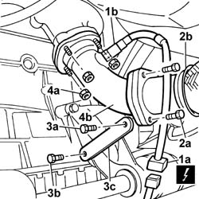
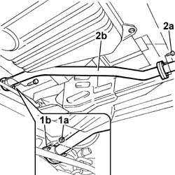
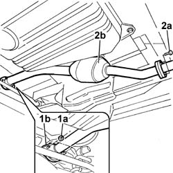

1076B50 EXHAUST PIPE ATTACHMENT TO ENGINE - R + R
- Path
- Procedures > 10 ENGINE UNIT > 1076 EXHAUST PIPES AND SILENCERS > 1076B EXHAUST PIPES AND SILENCERS > 1076B50 EXHAUST PIPE ATTACHMENT TO ENGINE - R + R
- Kind
- repair procedure (removal / refitting; the operation number is the code)
- Applies to
- all engines; all production periods
- Interactive page
- https://sloeber94.github.io/elrnDB-fDct/en/#/244000884
Applies to: engines: 2.0 16V; all production periods
 Removing
Removing
 Refitting
Refitting- Disconnect the negative battery terminal.
Op. 7055B54 UNDER-ENGINE GUARD - R R
1. Disconnect the electrical connection for the Lambda sensor (1a), undo the Lambda sensor (1b) and remove it.
2. Undo the bolts fixing the front exhaust silencer (2a) and move the front exhaust silencer (2b) aside.
3. Undo the bolt fixing the exhaust pipe to the bracket (3a), loosen the bolt securing the bracket to the gearbox (3b) and move the bracket (3c) aside.
4. Undo the exhaust manifold (4a) fixing nuts and remove the exhaust pipe (4b).

Applies to: engines: 2.0 16V; all production periods
Refitting
Removing- Fit the exhaust pipe.
- Tighten the exhaust manifold fixing nuts to torque.
- Position the bracket.
- Tighten the bolt fixing the bracket to the gearbox.
- Tighten the bolt fixing the exhaust pipe to the bracket to torque.
- Position the front exhaust silencer.
- Tighten the bolts fixing the front exhaust silencer to torque.
- Fit the Lambda sensor.
- Tighten the Lambda sensor to torque.
 | Value - daNm | Fastening | Component | Ø |
|---|---|---|---|---|
. | (Lambda sensor) 3.8 - 5.8 | Bolt | EXHAUST PIPE TO ENGINE | M18 X 1,5 |
- Connect the electrical connection for the Lambda sensor.
Op. 7055B54 UNDER-ENGINE GUARD - R R
- Connect the negative battery terminal.
Applies to: engines: 2.3 JTD 16V; all production periods
Removing
Refitting- Position the vehicle on a lift.
- Raise the lift.
1. Undo the fixing nuts (1a) and separate the exhaust pipe from the flange (1b) for the turbocharger hose.
2. Undo the bolts fixing the rear flange (2a) and remove the exhaust pipe attachment to the engine (2b).

Applies to: engines: 2.3 JTD 16V; all production periods
Refitting
Removing- Fit the exhaust pipe attachment to the engine.
- Tighten the bolts fixing the flange to the rear exhaust silencer.
| Value - daNm | Fastening | Component | Ø |
|---|---|---|---|---|
. | 2.6 | Bolt | REAR SILENCER EXHAUST | M8 |
- Tighten the nuts fixing the exhaust pipe to the turbocharger to torque.
| Value - daNm | Fastening | Component | Ø |
|---|---|---|---|---|
. | 2.6 | Nuts | EXHAUST PIPE TO ENGINE | M8 |
- Lower the lift.
- Remove the vehicle from the lift.
Applies to: engines: 2.8 JTD 8V; all production periods
- Operation not available.
Applies to: engines: 2.0 JTD 8V; all production periods
Removing
Refitting- Position the vehicle on a lift.
- Raise the lift.
1. Undo the fixing nuts (1a) and separate the exhaust pipe from the flange (1b) for the turbocharger hose.
2. . Undo the bolts fixing the rear flange (2a) and remove the exhaust pipe attachment to the engine (2b).

Applies to: engines: 2.0 JTD 8V; all production periods
Refitting
Removing- Fit the exhaust pipe attachment to the engine.
- Tighten the bolts fixing the flange to the rear exhaust silencer.
| Value - daNm | Fastening | Component | Ø |
|---|---|---|---|---|
. | 2,6 | Bolts | REAR SILENCER EXHAUST | M8 |
- Tighten the nuts fixing the exhaust pipe to the turbocharger to torque.
| Value - daNm | Fastening | Component | Ø |
|---|---|---|---|---|
. | 2.6 | Nuts | EXHAUST PIPE TO ENGINE | M8 |
- Lower the lift.
- Remove the vehicle from the lift.